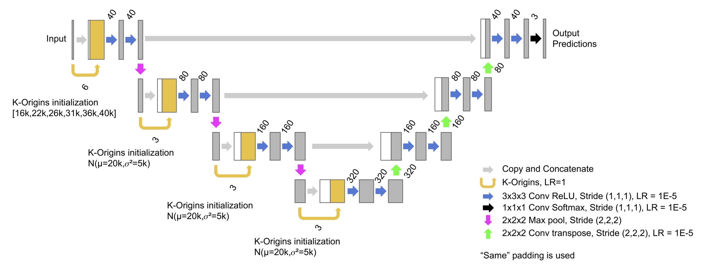
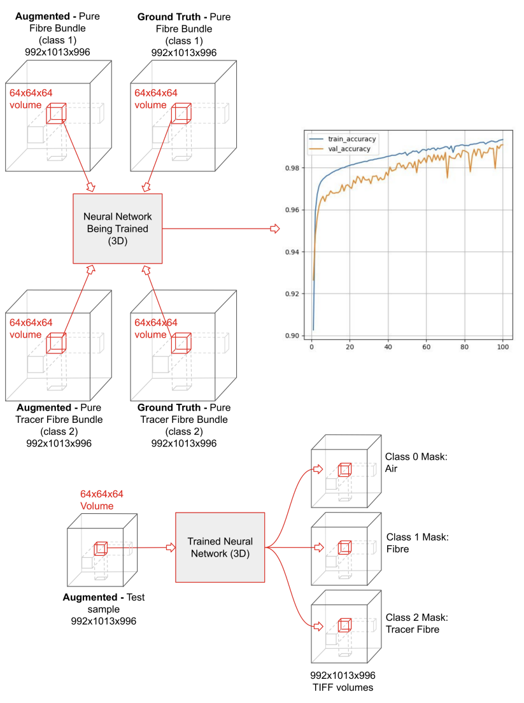

In this section, I showcase some of the projects I've worked on. Most of them are from co-op positions or university projects.
To summarize my thesis work, the goal was akin to finding needles in a haystack. The "haystack" was a paper handsheet, and the "needles" were pulp fibres coated with iron. These fibres were scanned using X-ray microcomputed tomography, presenting the challenge of very low contrast segmentation. I took a machine-learning approach for the problem.
The results of my thesis are illustrated below. On the left is the input data, and on the right is the segmented output, where the tracer pulp fibres are clearly identified. This segmentation is displayed in both a 3D view and a 2D slice for clarity.

The architecture used for this example is based on U-Net and incorporates a custom layer I developed, called K-Origins. This layer significantly improves CNN performance for colour-based problems, such as identifying tracer particles.

Here are the training and testing pipelines I developed. You can find everything on my public GitHub page!

The primary contribution of my work is the custom K-Origins layer I developed. Instead of relying on a pre-existing CNN, I approached the problem from the ground up, using synthetic data to design a network that learns exactly what I want it to. This process also allowed me to identify a key shortcoming in most CNNs: their limited ability to interpret relative intensities and colour information effectively.
The figures below illustrate how a network with K-Origins significantly outperforms one without it.
I present three examples across four cases, comparing two architectures: RFL14 and KRFL14. The only difference between the architectures is that KRFL14 includes my custom K-Origins layer.
In all cases, the network with K-Origins produces usable segmentation results, highlighting its effectiveness. I also performed a significant number of additional tests found in my Thesis.
Small one-target segmentation.

Large one-target segmentation.

Small two-target segmentation, representing tracer segmentation.

Large two-target segmentation, representing tracer segmentation.

The improvement is most significant when the mean of the intensity distributions is slightly varied between the targets.
I designed a small experimental system that uses a pH probe to measure and convert pH values into a readable voltage, which is then amplified and stored over time (about 10 readings per second). This system was built for around $100, whereas a commercial device with similar functionality would cost $1000 or more.
Note: The images below are an early design. The final design was cleanly soldered and involved additional Op-Amps for some circuit modifications and noise reduction.


Using this system, I created a data library for a chemical reaction (based on Hydrogen ion concentration) and attempted to fit the 10 coupled ODEs that describe the reaction in MATLAB. I successfully modeled the first half of the reaction, but encountered challenges fitting the second stage, where a reactant B was introduced into the system. There were some pH-dependencies that could not be modelled correctly.
Reaction A system modelled and interpolated for different concentrations (around 8 coupled ODE's).

Reaction B Hydrogen progression, where reaction B begins at 1500 seconds. I was unable to get a satisfactory model that worked for both reaction A and reaction B. In the future, monitoring more than just the pH would be beneficial.

In addition to this, I developed small digital current-to-voltage converters that allowed a DAQ to send signals to pump drivers.

I reverse-engineered the electrical system and firmware of a syringe driver. By analyzing the circuit, I was able to design a control circuit and develop the necessary firmware. The final system was capable of pumping liquid at precise flow rates (microlitres per second) for a specific volume. This project was completed within two months.

I was tasked with building a mini oven for a small wafer chip containing cells. I designed and tested a complete closed-loop electrical system to power Peltier devices and monitor temperatures using a thermistor. I also implemented the basic firmware and designed the mechanical assembly, which included parts that were milled and others printed with high-resolution resin.


In hindsight, I consider this project a learning experience rather than a success. With only two months to complete it during my second year of university—before I had taken many courses that would have significantly improved my understanding—I faced many challenges. If I had the chance to revisit this project now, I am confident it would be very successful!
Engineering Physics Robot Competition:
Our team built an autonomous robot capable of navigating a course and collecting objects. I worked on the electrical system and developed the firmware for the robot's "crane" arm, as well as minor mechanical suggestions.

Autonomous Agriculture Robot:
Our team used a pre-made robot to create a basic navigation system that learned about its environment through "trial and error" and a neural network to identify "good" and "bad" behaviours. My main contributions were in training and testing, as well as troubleshooting the electrical and mechanical systems.

Inductively Controlled RC Car:
Our team designed and built an RC car controlled by electromagnetic signals from hand-made inductors. My main contributions included developing the firmware, working on the motor's electrical system, and creating hand-made photovoltaic sensors for additional autonomous functionality.

Breast-Cancer Classifier:
Our team developed a recurrent neural network that processed outputs from a convolutional neural network to determine the cancer subtype of pathology images.
License Plate Parser:
Our team created an autonomous simulated car that detects and parses license plates using convolutional neural networks. My main contributions were in developing the license plate parser and detector.
I provided a proof of concept for high-frequency inductive power transfer (~6 MHz). Parasitics proved to be very challenging at these frequencies.
I implemented communication protocols (TCP) between a host computer and a heat chamber. Additionally, I rewrote the firmware for a light sensor to ensure it functioned according to the client's desired behaviour. I also developed an automated serial number printing script, which replaced the manual process of typing and printing hundreds of serial number stickers.